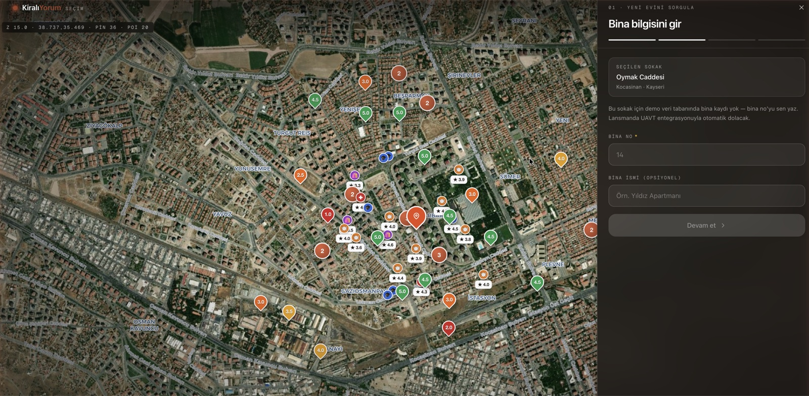
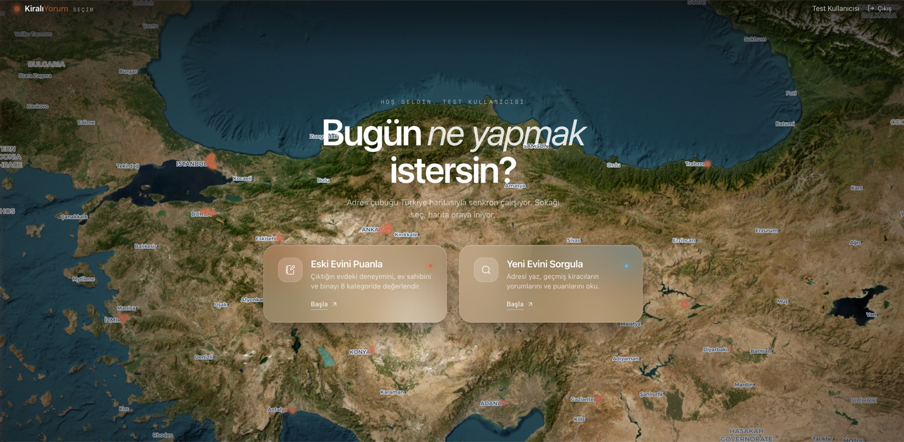

7M
Kiracı hanesi
Türkiye'de kiracı olarak yaşayan hane sayısı.
TÜİK · Hanehalkı 2024
Türkiye'de yok · Avrupa'da yok · ABD'de yalnızca self-tour donanımı var
"Eylül'de taşındım. İlanda 'asansör çalışıyor, ev güneş alıyor, sessiz' yazıyordu. İmzaladım."
"Ekim'de asansör 11 gün bozuk. Kasım'da kombiyi kendi cebimden tamir ettim. Aralık'ta üst kattan müzik durmadı. Mart'ta erken çıktım — depozitodan 18 bin kesildi."
Bir araba alırken bin yorum okursunuz. Aylar boyu yaşayacağınız evi ise sadece ilan fotoğraflarına güvenerek 12 aylık kontratla bağlarsınız.
Türkiye'de ilk · alanında öncü — biri yorum tarafında, diğeri ev gezme tarafında. Birini iyi yapmak zor, ikisini birden yapmak benzersiz.
İlanda yazmayanı, kiracısından öğren.
Glassdoor'un işyerlerine yaptığını biz konutlara yapıyoruz — e-Devlet doğrulamalı, KVKK uyumlu, adres bazlı. Türkiye'de tek; dünyada bir elin parmakları kadar nadir.
Türkiye'de yok · Avrupa'da yok · Türk gerçeğine uyarlanmış mimari.
Emlakçı yok, telefon trafiği yok. Müşteri uygulamadan randevu alır, esnaf K-Point'ten anahtarı alır, tek başına evi gezer, geri getirir. AI foto-diff + Iyzico provizyon = sıfır risk.
Türkiye'nin ilk yapısal kiracı yorum platformu — adres bazlı, doğrulanmış, korunmuş. Otelinizdeki 1 günlük kahvaltıyı puanlayabiliyorsunuz da, 3 yıl yaşadığınız evi neden puanlayamıyorsunuz? Glassdoor mantığı, Türkiye konutuna uyarlandı.
"Bina yeni, asansör çalışıyor, otopark var. Ev sahibi tamiratları 7 gün içinde hallediyor. Tek eksi: yaz aylarında klima şart."
Müşteri evi tek başına gezer. Çift QR + AI foto-diff + Iyzico provizyon = elektronik delil zinciri.
Avrupa'da benzeri yok. ABD'de Tour24 / Rently sadece self-tour donanımı satar — esnaf K-Point + AI iade doğrulama + KYC'li sigorta provizyonu hiçbir pazarda tek bir üründe birleşmedi.
Kiracı app'te mülkü bulur · 1 saatlik blok seçer (max 4 saat).
→Ev sahibinin önceden seçtiği üye esnaf veya akıllı kabin · kiracı seçemez.
→Iyzico 3D-Secure · kart blokesi (çekim yok) · randevu sonu otomatik iade.
→K-Point'te HMAC token eşleşmesi · anahtar kiracıya teslim edilir.
→Emlakçı yok · telefon trafiği yok · kiracı kendi başına evi inceler.
→Aynı QR · AI foto-diff (orijinal ↔ iade) · uyumluysa bloke saniyede serbest.
Kahveci, lostra, kuruyemiş — Faz 1 ana model. K-Pass Akıllı Kabin (PUDO benzeri) Faz 2'de paralel.
Hasar/kayıp hakem heyeti onayıyla capture; 6-12 ay içinde direct claim sigorta entegrasyonu.
PostgreSQL'de senet gibi yazılı elektronik delil zinciri — anahtar yakın çekim seri no AI referans imzası.
Emlakçının rakibi değil, asistanı. 2 saat boyunca tek müşteri gezdirmek yerine — aynı sürede 10 müşteri paralel daire görür.
Mockup değil — gerçek çalışan ekranlar. Splash, ülke geneli haritalama, sokak detayı pin clustering, 8 eksen yorum formu.

02 · Sokak detay + bina sheet
01 · TR geneli — eski/yeniEmlak ilan platformları yorum yapmıyor. Yorum platformları kiracıyı doğrulamıyor. Self-tour donanımları sadece Amerika'da, sadece smart-lock ile. Dördünü birleştirip Türkiye'ye uyarlayan tek platform: KiralıYorum.
| Platform | Bölge | Yapısal Yorum | K-Pass / Self-tour | Çevre Refah | e-Devlet KYC |
|---|---|---|---|---|---|
| sahibinden.com | TR | ✕ | ✕ | ✕ | ✕ |
| Hepsiemlak | TR | ✕ | ✕ | ✕ | ✕ |
| Zillow | US | ✕ | ✕ | ~ Walk Score | ✕ |
| Glassdoor | US / Global | ~ İşyeri | ✕ | ✕ | ✕ |
| Tour24 | US | ✕ | ~ Smart-lock | ✕ | ✕ |
| Rently | US | ✕ | ~ Smart-lock | ✕ | ✕ |
| tapkey | EU (AT) | ✕ | ~ Tatil kir. | ✕ | ✕ |
| KiralıYorum | TR | ✓ | ✓ | ✓ | ✓ |
✕ yok · ~ kısmi/farklı bağlam · ✓ tam destek
Ev sahibi adı sistemde yok. Maskeleme client-side yapılır, server'a "M.K." ulaşır. RLS aktif, 30 gün TTL, 5 yıl sonra anonimleştirme. Mevcut platformların DB'si bu mimariyle uyumsuz — yeniden inşa gerekir.
16 haneli kira sözleşmesi barkodu ile saniyede doğrulama. Cumhurbaşkanlığı Dijital Dönüşüm Ofisi başvurusu 6-9 ay sürer — biz ZeCorner ile birlikte erken başvuracağız. Sahibinden için ek 9 ay.
SMS + canlılık (liveness) + e-Devlet + kart provizyonu. Bu dördünü tek günde kuramazsınız — her biri ayrı entegrasyon, ayrı vendor, ayrı KVKK denetimi. Toplam: ~6 ay.
Ortaklığımız sonrası ZeCorner ağı bizim seed pazarımız. 30-40 ofis × ~500 portföy = ~25 bin mülk başlangıç stoğu. Sahibinden bu seed'i 12 ayda kuramaz; biz 1 günde kuruyoruz.
"İlk 12 ay korumamız 4 katmanın aritmetiği — soğuk başlangıçtan moat'a hızlı geçiş."
Form alanına yazılan isim anında client-side maskelenir, server'a yalnızca "A.Y." ulaşır. Tüm tablolarda RLS aktif. Doğrulama belgeleri 30 gün TTL.
Tek bir yorum bile moderasyondan geçmeden public olamaz. Webhook → n8n → Claude AI taraması → şüpheli içerikte manuel onay düğmesi.
Yorum üç kriteri sağlarsa hukuki olarak korunur: gerçeklik + kamu yararı + ölçülülük. Yer sağlayıcı sıfatıyla risk ZeCorner'a sıçramaz.
5651: 2007'de yürürlüğe giren İnternet Yayınlarının Düzenlenmesi Kanunu — yer sağlayıcının içerik sorumluluğunu tanımlar. · TBK 49: Türk Borçlar Kanunu — haksız fiil sorumluluğu; hakaret/iftira tazminat davalarının yasal temeli.
Kiralık konut, otomotiv ve enerjiden sonra Türkiye'nin en büyük yıllık tüketici harcaması. Kiracı, ev sahibi, emlakçı üçlüsünün hepsine değer üreten tek platform yok.
Türkiye'de kiracı olarak yaşayan hane · TÜİK 2024
Türkiye yıllık kira hacmi · GYODER 2024
İstanbul + Ankara + İzmir + Bursa · ilk 4 il
SAM'in %5'i · ZeCorner ağıyla erişilebilir taban
25-45 yaş, hareketli, dijital odaklı. Şehir değiştiren beyaz yakalı + öğrenci.
Portföyünü "iyi bina rozetiyle" değerlendirip premium kira isteyen.
ZeCorner gibi franchise emlakçı zincirleri + corporate housing.
Yönetim firmaları + GYO'lar · Trivago/Booking benzeri puan rozeti.
Splash · TR seçim · sokak detay · yorum yaz · kullanıcı paneli · ev sahibi paneli · admin moderasyon · raporlama.
Postgres + PostGIS + RLS politikaları · users / properties / reviews / verifications / k-pass.
Demo amaçlı 4 ana ilçe · pin clustering ve harita test verisi.
e-Devlet entegrasyonu + KVKK denetim + ZeCorner pilot 5 ofis.
Cumhurbaşkanlığı Dijital Dönüşüm Ofisi onayı kritik yol. Başvuru 6-9 ay sürebilir, ret olasılığı düşük ama sıfır değil.
OCR fallback hazır — kira sözleşmesi fotoğrafı (30 gün TTL) + DASK + fatura üçlüsü manuel inceleme. Hız 0 saniyeden 24 saate çıkar; doğrulama oranı korunur.
Bot kayıtlar, organize troll kampanyaları, ev sahibinin kendi binasına intikam yorumları.
4 katmanlı KYC (SMS + liveness + e-Devlet + kart) + akıllı moderasyon (n8n + Claude AI hava boşluğu) + same-IP / same-device deduplication. Tek yorum bile manuel onaysız geçemez.
Maskelemeye rağmen "M.K." adres + dönem ile tanımlanabilir; KVKK 6. madde özel nitelikli veri argümanı gelebilir.
Kıdemli KVKK avukatı görüşü (Q3 hazır) + 5651 yer sağlayıcı çerçevesi + 24 saat içerik kaldırma SLA + her yorumda yapısal puan + ölçülü dil.
Müşteri evi gezerken eşya zarar görür, anahtar kaybolur, kötüye kullanım yapılır.
₺50K Iyzico provizyon (Faz 1 self-insurance) + Faz 2'de Allianz/AXA grup poliçesi · çift QR + AI foto-diff + paymentId = elektronik delil zinciri (PostgreSQL'de senet gibi).
Mevcut sistem tek başına geliştirildi — ürün-pazar uyumunu doğrulayacak kadar olgun. ZeCorner yatırımı sonrası ilk 6 ay içinde alınacak 4 anahtar pozisyon aşağıda.
Ürün, vizyon, mevcut teknik mimari · 8 sayfa, 9 migration, 4 ana akış sıfırdan inşa.
Ölçek mimarisi, K-Pass donanım entegrasyonu, mobile native ekipler. Backend lead deneyimi şart.
K-Pass üye esnaf ağı, kabin operasyonu, sigortacı ilişkileri, KYC süreçleri.
Senior KVKK avukatı (danışman model). e-Devlet başvuru, içerik kaldırma SLA, 5651 protokol.
ZeCorner ofis aktivasyon, kiracı acquisition, B2B çözüm satışı (DaaS, bina rozet, banka skoru).
"ZeCorner sermayesi 6 ay içinde 4 anahtar koltuğu kapatır. Ay 12'ye kadar takım tam, sistem ulusal lansmana hazır."
Premium kiracı: ₺49 / yorum + adres puanı PDF · ortalama 8K/ay
Üye esnaf ağından her gezdirme · ZeCorner emlakçı ayda +15 kiracı
Trivago / Booking analojisi: ZeCorner deneyimli emlakçıları sisteme girdiği bina ve siteleri puanlar. Yatırımcı + kiracı için "güven endeksi". Premium rezidans yönetimine ₺45K-180K/yıl SaaS.
Bina yöneticileri "doğrulanmış iyi yönetim" rozeti satın alır · ₺2.400/yıl
Anonim agregat · banka kira skoru + GYO yatırım pipeline'ı · ₺120K/yıl
5 yıl boyunca KiralıYorum'un Türkiye distribütörü tek kuruluş: ZeCorner.
| ZeCorner için 3 yıllık projeksiyon | Yıl 1 | Yıl 2 | Yıl 3 |
|---|---|---|---|
| ZeCorner ofis sayısı (entegre) | 5 | 20 | 35 |
| Ofis başına ortalama kira işlemi | 120 | 180 | 240 |
| KiralıYorum kaynaklı ek müşteri akışı | 600 | 3,600 | 8,400 |
| Ortalama komisyon (₺) | 25,000 | 28,000 | 32,000 |
| ZeCorner'a ek komisyon geliri | ₺15M | ₺101M | ₺269M |
| + KiralıYorum hisse değeri (%12) | ~₺5M | ~₺28M | ~₺95M |
Bugün 7 milyon kiracının haksızlık hikâyesi var. KiralıYorum bu hikâyeleri yapısal veriye, veriyi güvene, güveni de yeni nesil emlakçılığa çevirir. ZeCorner ile birlikte bu yolculuğu 3 yıl kısaltırız.